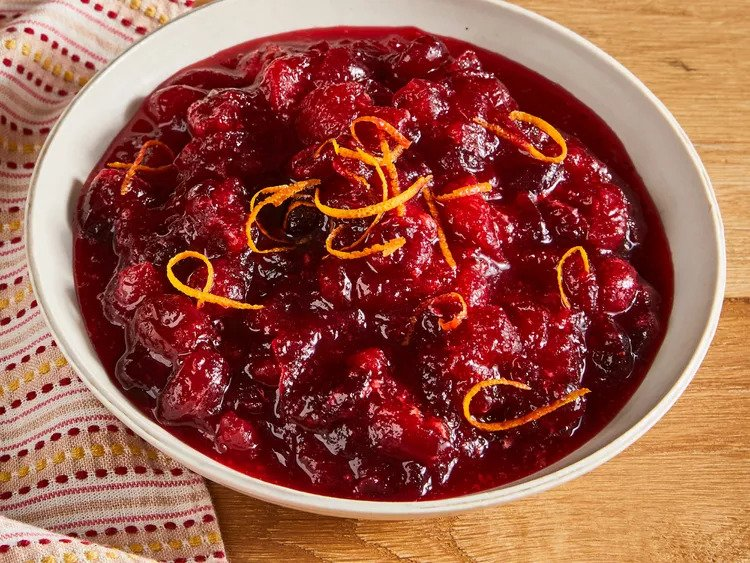

Cranberry Sauce

You'd be surprised how easy it is to whip up some delicious homemade cranberry sauce!
If you need some cranberry sauce for thanksgiving dinner, this recipe is perfect to make cranberry sauce that will not disappoint.
Ingredients
- Fresh Cranberries
- Sugar
- Orange Juice
Steps
- Gather all the ingredients
- Dissolve sugar in the orange juice in a medium saucepan over medium heat.
- Stir in the cranberries and cook until they start to pop, about 10 minutes.
- Remove from heat and place the sauce in a bowl. It will thicken as it cools.
- You are done and free to enjoy!